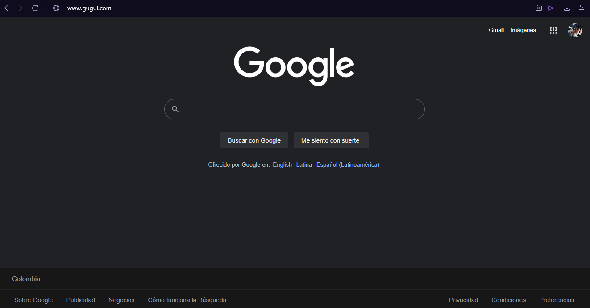
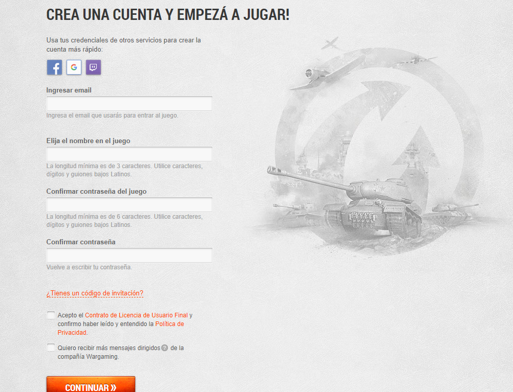

Es una pagina nacida de la idea de 3 estudiantes intentando cumplir con un proyecto de escuela, aqui se busca
informar un poco a nuestros lectores sobre formas de navegar por internet de una forma mas segura y efectiva.
Tambien tenemos como objetivo enseñar algunos "trucos" para facilitar algunas cosas en internet.
Uno de los errorres que cometen muchos usuarios en internet al usar los motores de busqueda, es escribir lo que buscan usando frases completas como si estuvieran hablando con una persona.
Los motores de busqueda funcionan mostrandote paginas con las palabras clave que coincidan con lo que buscas, al introducir frases completas como si se hablara con una persona causa que muchas potenciales paginas con lo que buscas queden escondidas por otras paginas que pueden no contener lo que buscabas desde un principio, es por eso que es mejor buscar solo con las palabras claves de lo que quieres, como por ejemplo:
En la web abundan los sitios maliciosos creados por usuarios que solo buscan robar tu informacion o en el peor de los casos infectar tu computadora de virus, es por eso que es importante poder identificar estos sitios con bastante precision, es de sentido comun sospechar de una pagina llena de anuncios organizados de manera invasiva, pero hay muchos otros casos en las que estas paginas estan muy bien elaboradas y es dificil saber si son o no son peligrosas.
Es posible que en la imagen anterior no se hayan pertacado de nada raro, o si lo hicieron pensaran que no importa mucho, pero las direcciones url tienen que ser bastante precisas o de lo contrario estarian dandole la informacion a un ente desconocido.
Otra forma de saber si una pagina es segura o no, es que siempre y cuando la direccion url este correctamente escrita y la pagina este verificada, en la mayoria de navegadores saldria el icono de un candado cerrado al lado izquierdo de la direccion diciendo que la conexion es segura en el caso de que le den click
Claro, para poder verificar si el icono del candado esta cerrado o abierto tendrian que entrar a la pagina web, asi que si se va a usar este metodo se recomienda verificar el candado inmediatamente despues de entrar a una pagina desconocida antes de realizar alguna accion en esta.
La mayoria de paginas tienen todas sus funciones organizadas de manera muy similar, es mas facil navegar de esa forma que aprendiendote el como funciona cada pagina por separado
Casi todas las paginas en la web te pidan crear una cuenta para mejor funcionamiento tendran la opcion de iniciar arriba a la derecha junto con la opcion de registrarse (crear una cuenta) y tendran un formato similar a este:
Como pueden ver tambien esta la opcion de crear una cuenta rapidamente usando algunos de los servicios compatibles con esta funcion, afortunadamente la mayoria de paginas permiten la creacion de cuenta con Google facilitando el proceso.